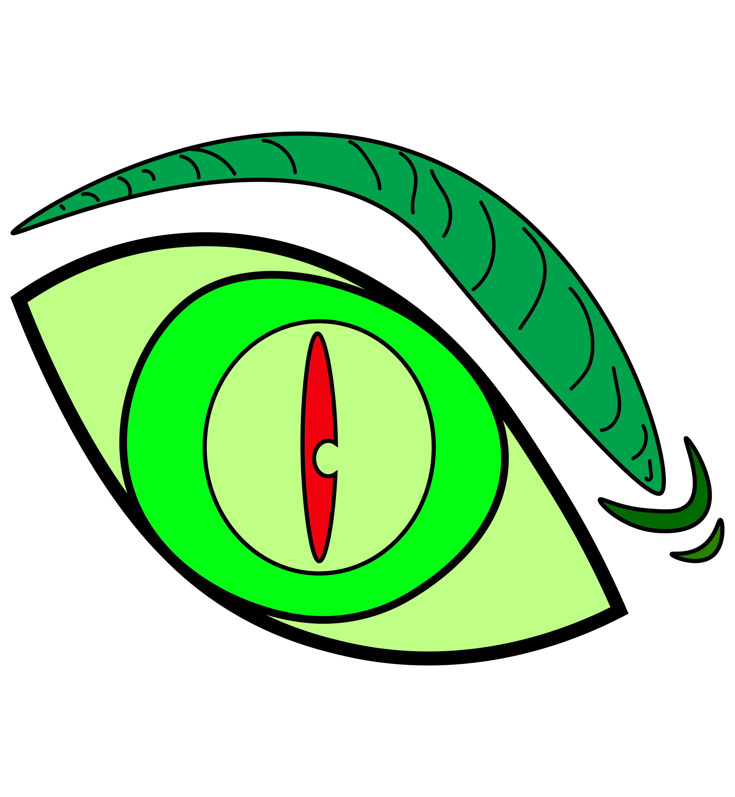
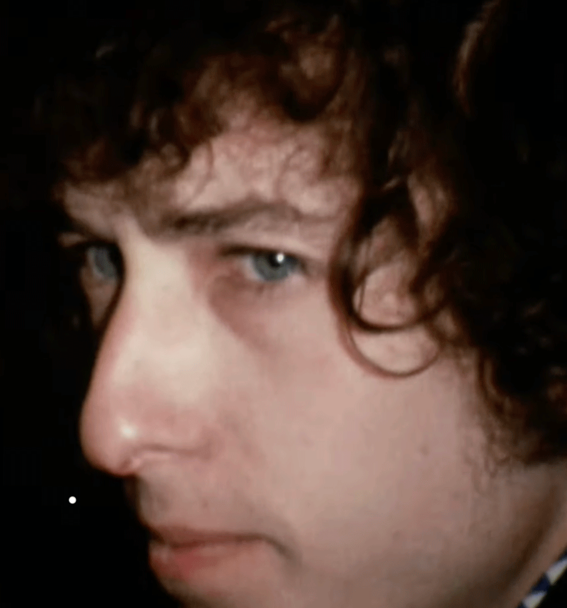

In the assignment I animated my Creatures eye into a gif. The intention behind this animation was to subvert the initial intentions of the eyes' emotions of predatory anger. I subverted this by adding a tear falling out after the eye blinks. The animation brings the eye to life and adds a class of two emotions of sadness and anger that wasn't possible to convey through just the still image I created in illustrator. For the second animation I was influenced by my studies outside of the class and brought my Major of Documentary Production and media studies into my assignment. I chose to take a moment from one of my Favorite documentaries “Dont Look Back” about Bob Dylan's Life on tour and turn a very small moment from it into an animated gif.
HOME